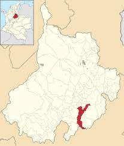

CHARALÁ SANTANDER

Charalá es un municipio de Colombia ubicado en el departamento de Santander. Cuenta con una extensión de 411.000 km^2. Tiene una altitud de 1.259 m sobre el nivel del mar. Limita al norte y noroeste con el municipio de Ocamonte, al sur con Oiba y al occidente con Confines. La distancia entre Charalá y Bogotá es de 213 km.
Es llamada Cuna de la Libertad de América por sus aportes en la revolución de los Comuneros; además es cuna de próceres como José Antonio Galán y José Acevedo Gómez. Aquí también se llevó a cabo la batalla del Pienta el 4 de agosto de 1819, la cual fue crucial para la indepencia de Colombia. Recibió su nombre en honor al cacique Chalala.
La cabecera municipal de Charalá dista 135 kilómetros de Bucaramanga, la capital del departamento. Territorio ondulado y fértil es avenado por los ríos Táquiza, Pienta, Cañaverales, Riachuelito y Virolín. Registra una temperatura media anual de 21 grados Celsius. En este municipio se encuentra parte del santuario de fauna y flora Guanentá Alto Río Fonce.
Charalá cuenta con varios lugares de interés: el parque natural de Virolín,la cueva del Tigre, la cascada en forma de cáliz de la Quebrada Tinagá , la iglesia de Nuestra Señora de Monguí, la Casa de la Cultura y el Museo Arqueológico. El parque principal donde se encuentra el monumento de José Antonio Galán y el gran Samán de Arabia, árbol sembrado para conmemorar el centenario de la Independencia de Colombia, el 20 de julio de 1910.
LUGARES DE INTERÉS
PARQUE VIROLIN
 El lugar, situado a más de tres mil metros de altura sobre el nivel del mar, es punto clave de equilibrio natural. Allí, en medio de los frailejones, nacen cuatro importantes ríos que atraviesan la geografía de Santander: Fonce, Pienta, Guillermo y Virolín, que reciben a su vez las aguas de cientos de quebradas que son fundamentales para la vida de parte de los habitantes del departamento.
El sector está dominado por la cuchilla de la Rusia, desde donde se divisa a Charalá, Encino y Gámbita (en Santander) y Duitama y Sogamoso (en Boyacá).
Gracias a su quebrada geografía, se ha mantenido casi virgen el bosque de robledales situado en el corazón del parque, sobre unas 840 hectáreas. De estos bosques autosubsistentes también dependen unas 19 especies de mamíferos, entre los cuales se destaca el oso de anteojos, además de tigrillos, tapires y especies menores de vertebrados; 30 especies de aves debidamente clasificadas, entre las cuales sobresale la perdiz, Odontophorus Strophium, especie que desapareció en México en 1915, y seis familias de reptiles y anfibios.
El lugar, situado a más de tres mil metros de altura sobre el nivel del mar, es punto clave de equilibrio natural. Allí, en medio de los frailejones, nacen cuatro importantes ríos que atraviesan la geografía de Santander: Fonce, Pienta, Guillermo y Virolín, que reciben a su vez las aguas de cientos de quebradas que son fundamentales para la vida de parte de los habitantes del departamento.
El sector está dominado por la cuchilla de la Rusia, desde donde se divisa a Charalá, Encino y Gámbita (en Santander) y Duitama y Sogamoso (en Boyacá).
Gracias a su quebrada geografía, se ha mantenido casi virgen el bosque de robledales situado en el corazón del parque, sobre unas 840 hectáreas. De estos bosques autosubsistentes también dependen unas 19 especies de mamíferos, entre los cuales se destaca el oso de anteojos, además de tigrillos, tapires y especies menores de vertebrados; 30 especies de aves debidamente clasificadas, entre las cuales sobresale la perdiz, Odontophorus Strophium, especie que desapareció en México en 1915, y seis familias de reptiles y anfibios.
QUEBRADA TINAGÁ
 Es un salto de agua descendiente de aproximadamente 60 m de altura, alli se realiza torrentismo. La historia cuenta que en esta vereda existia uan bruja, la cual se robaba los niños del pueblo que luego aparecerian en la cascada. Un indio que vivia en las cavernas salio en su busqueda hasta que la mato, pero de el indio no se supo nada mas.
Es un salto de agua descendiente de aproximadamente 60 m de altura, alli se realiza torrentismo. La historia cuenta que en esta vereda existia uan bruja, la cual se robaba los niños del pueblo que luego aparecerian en la cascada. Un indio que vivia en las cavernas salio en su busqueda hasta que la mato, pero de el indio no se supo nada mas.
Así mismo cascada tiene forma de cáliz, por lo que popuplarmente es conocida de esta forma. Es uno de los lugares turísticos de charalá
CUEVA DEL TIGRE
 En esta cueva se pueden apreciar estalactitas, estalagmitas, estalagnatos, cortinas y otras formaciones rocosas, pozos de aguas cristalinas, lodazales, partes estrechas que obligan a arrastrarse y partes tan amplias que simulan las cúpulas de las catedrales.
En esta cueva se pueden apreciar estalactitas, estalagmitas, estalagnatos, cortinas y otras formaciones rocosas, pozos de aguas cristalinas, lodazales, partes estrechas que obligan a arrastrarse y partes tan amplias que simulan las cúpulas de las catedrales.
Esta cueva hace parte de uno de los sitios turísticos de Charalá. Es ampliamente viistado en los recorridos ecológicos de la zona. Ya que, al igual que la mayor parte de Santander. CHaralá cuenta con imponnetes vistas y con hermosa biodiversidad, lo que hace la zona de gran atractivo turístico